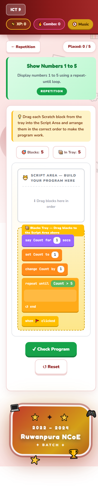

ICT Game World - redesign plan (grades 6-9, සිංහල · தமிழ் · English)
Waiting on your decisionsTHE 60-SECOND VERSION
Her game is solid and on-syllabus. The work is unifying it, not rescuing it.
Nine separate HTML files on four different engines become one trilingual web app with a real design system from Open Design, playful motion, a nickname leaderboard on Supabase, and a Vercel deploy.
9 files, 4 engines, 15 activity types. 86 activities plus 14 Scratch puzzles (and an 18-game grade 9 variant). Grades 6-8 English and Sinhala are 1:1 - all 68 activities have the same ids, types and answer keys, so they merge cleanly.
Content matches the NIE syllabus for grades 6-9. The 2026 junior-secondary reform (modules, ICT as a new grade 6 subject) was pushed to January 2027, so this syllabus is still what classes teach.
Mobile is mostly fine already. No page scrolls sideways at 375px. One activity breaks: the flowchart symbol match stacks 15 cards under 3-column headers.
Languages: Tamil is ~1,000 content strings + ~80 UI labels, and grade 9 has no Sinhala twin. The Sinhala text also has ~44 likely font-conversion typos (මාදුකාංග x19).
Leaderboard is doable on Supabase free with no server code: nickname + class code, locked-down writes. Two catches: free projects pause after 1 week of low activity, and every student is a "child" (under 16) under Sri Lanka's PDPA.
Answer the 10 decisions at the bottom (my picks are pre-selected) and queue them.
For the leaderboard: create a new free Supabase project and connect its MCP (steps in section 7).
I build the design system in Open Design and pause for your look, then build, prove with Playwright, and hand over.
Everything below is the evidence behind these five points.
1 · What exists today
Nine files, four engines
Read from Downloads\project zip and loaded into Open Design as the project "ICT Game World - originals" (9 artifacts). Counts come from each file's own LESSONS data, read in a browser.
Grade
Files
Engine
Lessons
Activities
Activity types
Note
6
english.html, sinhala.html
1
6
22
match 9 · pick 5 · order 4 · bucket 3 · symbol-match 1
en = si (ids, types, answers). One wrong option differs: "Ceramic plate" vs කෑදර පුටුව (cane chair)
7
english.html, sinhala.html
1
7
29
match 13 · pick 7 · bucket 4 · order 4 · symbol-match 1
English UI with Sinhala sub-titles; a different game and a different look
9
scratch.html
3
-
14 puzzles
Scratch block builder
Standalone copy of the hub inside english medium (same 14 puzzles, one renamed)
How it looks now (Playwright, before any change)
Grade 6 Sinhala home, phone. Works: cards stack, Noto Sans Sinhala loads, header wraps cleanly.
Symbol match, phone - broken. 15 cards in one column under 3-column headers; pairing needs long scrolls. Cause: grade 6 english.html:394 sets .sym-match-wrap to 1 column under 640px.

Grade 9 Scratch puzzle, phone. Fits; touch drag runs through pointer events. Keep the mechanic, restyle it.
Grade 9 "ICT Adventure", desktop. A separate visual language (purple, Segoe/Comic Sans) - one reason for a shared design system.
2 · Syllabus check
Her lessons line up with the NIE syllabus
Compared against the NIE ICT syllabus PDFs and teachers' guides. I am not proposing any content changes. The "not covered" column just lists what the game doesn't include.
Grade
NIE competencies (short)
Her lessons
Fit
Not covered by the game
6
Importance of computers · safe use · OS + files · mouse/keyboard, audio/video apps · algorithms + flowcharts · Internet + search + safety
Importance of Computers · Lab Safety · OS & Files · Mouse & Keyboard · Algorithms & Flow Charts · Using the Internet
✓ close
audio/video software
7
CPU organisation · OS · security · word processing · Scratch programming · presentations · Internet, e-mail, HTML, safety
CPU · OS · Security · Word Processing · Programme Development · Presentation Software · Using Internet
✓ close
-
8
Number systems · OS settings + troubleshooting · word processing · flowcharts + control structures · physical computing · search + websites (HTML)
Number Systems · Configuring & Formatting · Word Processing · Programming · Logic Gates / Physical computing · Internet & Web
Specifications · Spreadsheets · Programming + Scratch builder · Microcontrollers · Networks · ICT and Society
✓ close
array variables
Reform status: the new module-based curriculum for grades 6-9 (with ICT listed as a new grade 6 subject) was postponed by Cabinet from 2026 to January 2027, and teachers are "continuing lessons under the existing syllabus". Worth revisiting in 2027, when grade 6 module content lands.
The key question: where does each language live? Today each language is a copy of the whole game. In the proposal, each piece of text holds all three languages, and one engine runs every grade.
Solid arrows are the plan. Dashed ones depend on your answers (D3 for ICT Adventure, D6/D7 for Supabase).
index.html one page, hash routes
css/tokens.css from Open Design
css/app.css components + motion
js/app.js i18n.js audio.js player.js
js/leaderboard.js Supabase + local board
js/activities/*.js 15 activity types
data/grade-6..9.js { en, si, ta } content
fonts/ (if offline is chosen)
scripts/check-data.mjs parity test
original/ her 9 files, untouched
Why no build step (D1)
She can open any file and edit a question in plain JS. No npm install, no bundler to learn before her viva.
Plain ES modules run in every current browser, and Vercel serves the folder as-is.
What we give up: no TypeScript and no hot reload. At this size, that costs little.
4 · Design direction + motion
Playful for 11, not babyish for 15
Open Design will turn your pick into a full design system: DESIGN.md, tokens, a component showcase. These three phones are my quick sketches of each direction, not final screens. Pick one in D2.
A · Game Lab my pick
7⚡ 240 XPසිං · த · EN
ආයුබෝවන් නිමේෂ්! අද පාඩම 3 👋
Feels like
Duolingo-style chunky buttons (her originals already use this), a lesson path with progress, the robot mascot reacting to answers.
Per grade
Same components, a colour world per grade: 6 teal, 7 indigo, 8 orange, 9 a darker "night lab" so grade 9 feels older.
Sri Lankan
Light touch: trilingual throughout, local examples, one subtle pattern accent.
Risk
Low. It builds on what she already made.
B · Lanka Quest
ICT චාරිකාව
GRADE 7 · LEVEL MAP
1 · මධ්ය සැකසුම් ඒකකය ✓
2 · මෙහෙයුම් පද්ධතිය ✓
3 · පරිගණක පද්ධතියේ ආරක්ෂාව
4 · වදන් සැකසීම 🔒
Feels like
An adventure map with Sri Lankan craft cues: liyawela-style borders, lotus nodes, maroon + saffron.
Per grade
Each grade is a "region" on the map.
Sri Lankan
Strong and very visible.
Risk
Medium. Heritage motifs can tip into kitsch or feel like a flag. They also compete with the teaching content for attention.
C · Clay Pop
Grade 7 · Pick a lesson
🧠CPU
💻Operating System
🛡️Security
📝Word Processing
🧩Programming
📊Presentation
Feels like
Soft, puffy, pastel 3D. Very friendly.
Per grade
Pastel tint per grade.
Sri Lankan
Neutral.
Risk
Medium. It reads young, so grade 8-9 students may find it childish. Soft shadows also cost more on the old lab PCs.
Type: all three scripts, one family feel
Her current fonts, Fredoka and Nunito, have no Sinhala or Tamil glyphs. I checked this through the Google Fonts CSS API (unicode ranges). The fonts below all do. Open Design finalises the pick.
English
Lesson 1 · Importance of Computers
Match each feature of a computer with its correct description.
கணினியின் ஒவ்வொரு இயல்பையும் அதன் சரியான விளக்கத்துடன் பொருத்துக.
Baloo Thambi 2 (display) · Noto Sans Tamil (body) - same Baloo family as English
Rules the design system will carry: no letter-spacing and no ALL CAPS on Sinhala or Tamil, line-height at least 1.6 for them, and a slightly larger size so the vowel signs read clearly on cheap phone screens.
Motion: tap to replay
These are samples of the motion layer. The rules: animate only transform and opacity, so old lab PCs stay smooth. Every animation confirms something the student did. With the system's "reduce motion" setting on, it all becomes an instant state change.
Correct answer
Pop plus a spark burst; the mascot cheers.
Wrong answer
Short shake and a coral flash, then the correct option glows. No harsh buzzer by default.
⭐⭐⭐
Result stars
Stars land one by one; points count up; confetti on 3 stars.
Lesson unlocked
The path draws to the next lesson, and the new node pops in.
Also planned: screen-to-screen transitions (View Transitions API, with a fade fallback), staggered card entrances, drag lift and snap for ordering, sorting and Scratch blocks (real drag, keeping her arrow buttons as the accessible fallback), leaderboard rank changes that slide rows into place, and the mascot idling.
5 · Languages
Sinhala, Tamil, English - what it takes
How switching works
A සිං · த · EN switch in the header, remembered on the device.
Sets <html lang>, so each script gets its own font and spacing.
Scores and progress carry over when the language changes: it's the same activity, just different text.
The pattern (ha for bha, a dropped ru-kaaraya, a short vowel for a long one) is typical of converting text from old FM-font Sinhala to Unicode. Nothing changes without her OK. She gets the full list with every location.
6 · Leaderboard (new ask)
Name first, then a class leaderboard
Yes, Supabase can do this with no server code. The browser talks to Supabase directly, and database rules decide what it may read and write. The design below keeps it fair enough for a classroom and safe for under-16s.
🤖
What should we call you?
Nimesh_7B
💡 Use a nickname, not your full name.
Pick your robot
🤖👾🦾🛸🐯🐘🦚🐢
Class code (from your teacher, optional)
7B-2026
First run only. Stored on the device, with "Not you? Switch player" for shared lab PCs.
🏆 Leaderboard · Grade 7
Class 7BAll Grade 7
This weekAll time
👾Kavya
2
🦚Tharu
1
🐯Ashan
3
4🐘 Dilki910
5🤖 Nimesh_7B (you)860
6🛸 Sahan845
7🐢 Ruvi790
Reached from a trophy in the header. The result screen also says "You moved up to #5 in 7B!"
How points work
Each activity scores 0-100 (her existing score ÷ total).
Only the best try per activity counts, so replaying the same easy game can't farm points. Grade totals are comparable.
This week: resets every Monday. All time: the grade total.
Fair enough, honestly
The browser key is public by design, so a determined kid could post fake scores. The database function caps each activity at 100, so the worst a cheater can reach is a perfect score, not 99,999.
Your sister can hide or delete any name from the Supabase dashboard.
Offline first
Scores save on the device first and sync when online. With no internet or Supabase paused, the board shows "this device" scores instead of an error.
Only a small, fixed set of data ever leaves the device: nickname, robot, class code, grade, activity id, points.
Children's data. Sri Lanka's PDPA No. 9 of 2022 defines a "child" as anyone under 16, so every grade 6-9 player counts, and children's interests override the "legitimate interests" basis. The main parts of the Act have no commencement date yet (the 2025 date was withdrawn by Gazette 2427/34). Design as if it applies anyway: nicknames only, with an on-screen tip; no email, no age, no school name; optional class code; she can delete any row; a short note in the app saying what is stored. If her college or a school asks for parental consent, a class-code-only board (no public "All Grade 7" tab) keeps it inside the classroom.
What the MCP can do here, and what you need to set up
Found on this machine
A Supabase MCP exists, but it is configured only for VaniBot (startup\whatsapp-vocie-agent), so it is not loaded in this session.
It authenticates with an access token, and a Supabase token normally reaches every project on your account, VaniBot included. I'd rather not point that one at a kids' game.
The Vercel MCP is configured account-wide (mcp.vercel.com) but not authenticated yet. That matches your "connect later".
What I'd do through the MCP
Create the tables, RLS policies, submit_score() and the views as one migration.
Run Supabase's security advisors and fix anything flagged.
Fetch the project URL and the browser key for js/config.js.
Prove RLS: a direct insert with the browser key must be refused.
Your part (about 5 minutes)
In the Supabase dashboard, create a new free project called ict-game-world. Region: Mumbai (ap-south-1), the closest to Sri Lanka. Send me the project ref.
From freelance-projects\ict-game-world, add an MCP locked to that one project:
claude mcp add --scope project --transport http supabase "https://mcp.supabase.com/mcp?project_ref=<ref>&features=database,docs,development"
then run /mcp and sign in (OAuth). No token is saved in the file.
Start the build session from that folder, so the scoped MCP loads.
Free plan limits (supabase.com): 2 active projects per account, 500 MB database. Projects pause after 1 week of too few database requests; while paused, requests get HTTP 540 until you restore the project from the dashboard. You get a warning email a week before. If VaniBot plus another project already fill your 2 slots, tell me in D7.
Open Design owns the look: design system, key screens. I own the production code, so the logic and the answers stay exact. The finished app goes back into Open Design so she can browse and iterate there.
Originals in Open Design
Project "ICT Game World - originals", all 9 files previewable as artifacts. Done.
Design system in Open Design
A design-system run with the brief: ages 11-15, 3 scripts, per-grade colour worlds, motion and reduced-motion rules, your D2 pick. Output: DESIGN.md, tokens.css, a component showcase.
Key screens in Open Design
Welcome and name, grade picker, lesson path, activity, result, leaderboard. Phone and desktop.
Checkpoint (D8)
You look at it in Open Design before I write app code. Cheap to change here, expensive later.
Build locally
Data extraction plus the parity script first, then the engine, 15 activity types, motion, languages, player and leaderboard.
Supabase via its MCP
Schema, RLS, function, views, advisors. Needs your 5-minute setup from section 7.
v2 back into Open Design
Project "ICT Game World - v2", for her to explore and tweak.
Vercel
Config ready. Deploy only after you connect the Vercel MCP and say go.
9 · Proof + risks
How I'll show it works
Proof
node scripts/check-data.mjs: 0 differences in lessons, activity ids, types or answers vs her 9 originals; 0 missing translations.
Playwright: 4 grades x 3 languages x 375px and 1366px. Every activity type played to the end with correct answers; 0 console errors; 0 sideways scroll.
The same run with reduce-motion on.
Leaderboard: two browser profiles rank correctly; a direct insert is refused; submit_score rejects 101 points and a 40-character name; offline play syncs on reconnect.
Before/after screenshots of the same screens in evidence/.
Risks
med Porting 4 engines into 1 could change an answer. The parity script guards it on every run.
med AI-drafted Tamil (all grades) and Sinhala (grade 9) need a human teacher's review before real classroom use. Shown as "beta" until then.
med Supabase free pausing during school holidays. The board falls back to device scores; the optional daily cron keeps it awake.
note It is her assessed final-year project. She should be able to explain every part at her viva, and her college's rules on outside help apply. See D10.
10 · Decide
Ten decisions, one submit
My picks are pre-selected. Change any of them, add notes, then press Queue my decisions and Send to Agent in the Lavish panel. Queue again to replace the earlier answer.